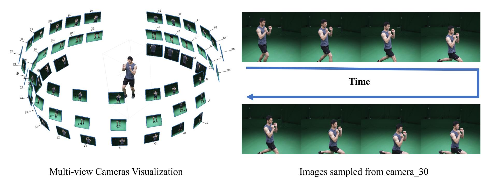
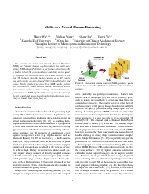

|  |
This dataset collects five sequences by a multi-camera dome system with up to 80 cameras arranged on a cylinder. All cameras are synchronized, calibrated and captured at 25 frames per second. Performers are in different clothing and perform different actions. All sequences have a length between 8 to 24 seconds. Specifically, `sport1`, `sport2`, `sport3` correspond to dumbbell lifting with relatively tight clothing, `dance` contains complex and highly deformable clothing, and `basketball` involves interactions between a player and a ball. Each sequence contains RGB images, foreground masks, RGB point cloud sequence and camera calibration. We use chrome key based matting followed by manual fixing to extract the ground truth masks for all views. We use one of the best commercial SfM software Metashape to compute all frames' initial 3D point clouds.
Datasets are now released for non-commercial purposes. Please see here |
Results
Video below shows results on the 5 datasets. Please see here for more details.
Citation
@inproceedings{wu2020multi,
title={Multi-View Neural Human Rendering},
author={Wu, Minye and Wang, Yuehao and Hu, Qiang and Yu, Jingyi},
booktitle={Proceedings of the IEEE/CVF Conference on Computer Vision and Pattern Recognition},
pages={1682--1691},
year={2020}
}
Downloads
|  | " Multi-view Neural Human Rendering " Minye Wu, Yuehao Wang, Qiang Hu, Jingyi Yu. IEEE Conference on Computer Vision and Pattern Recognition (CVPR), 2020 [Paper (pdf, 2.1MB)] [Poster Slides (pdf, 1.3MB)] [Code (github)] [Datasets sport_1(7z, 2.4GB) sport_2(7z, 2.7GB) sport_3(7z, 2.7GB) basketball(7z, 4.5GB) ] |
Last update: Sep. 26, 2020